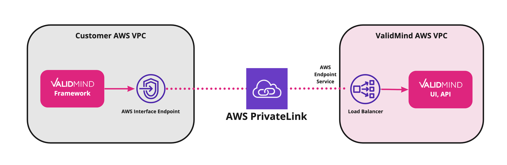

Configure AWS PrivateLink
Learn how to configure AWS PrivateLink to establish a private connection between ValidMind and your company network without exposing traffic to the public internet. Using PrivateLink can improve the security and compliance of your applications and data by keeping traffic private and reducing the attack surface of your network.

AWS PrivateLink is a networking service that allows secure and private communication between Amazon Virtual Private Cloud (VPC) resources and services hosted in other VPCs or in AWS partner services, such as ValidMind. With AWS PrivateLink, you can connect to services over the Amazon network, without needing to expose your network traffic to the public internet.
PrivateLink works by creating a private VPC endpoint for a supported AWS service within your virtual private cloud. This endpoint acts as a proxy between your VPC and ValidMind, allowing traffic to be routed privately over the AWS network. To make the endpoint easier to use, ValidMind provides a private DNS name that model developers and validators can connect to in a browser.
The responsibility of setting up a VPC endpoint for AWS PrivateLink falls to your IT department, such as the cloud engineering, infrastructure, or security teams. To learn more, check Access an AWS service using an interface VPC endpoint.
Prerequisites
You must have access to the AWS Console for your company and the necessary expertise to set up, configure, and maintain AWS services.
These steps assume that you already have established connectivity between your own company network and AWS VPC and know which company VPC you want to connect to.
VPC service information
| Region | Service name | Private DNS name |
|---|---|---|
| us-west-2 | com.amazonaws.vpce.us-west-2.vpce-svc-0b956fa3e03afa538 | https://private.prod.vm.validmind.ai |
Steps
Create a VPC endpoint for ValidMind:
- Log into the AWS Console.
- In the VPC dashboard, click Endpoints in the navigation pane.
- Click Create endpoint.
- Select Other endpoint services.
- Enter the service name from the VPC service information and click Verify service.
- Select the company VPC that you want to create the endpoint in.
- Select the subnets where you want to create the endpoint network interfaces.
- Configure the security group for the VPC endpoint. Make sure to allow traffic between your network and the endpoint.
- Click Create endpoint.
The status for the endpoint should show
Pending.Contact ValidMind at support@validmind.ai to get your new VPC endpoint connection request accepted. Include the following information:
- The owner or account ID
- The VPC endpoint ID
After ValidMind has accepted your endpoint connection request, verify the endpoint is available:
- In the VPC console, go to the Endpoints section.
- Verify that status for the endpoint shows
Available.
Enable the private DNS name:
- Check the VPC endpoint you created, click the Actions menu, and select Modify private DNS name.
- Select Enable for this endpoint.
- Click Save changes.
- Verify that Private DNS names shows the name shown in the VPC service information.
Test the connection:
- From your company network, access ValidMind using the private DNS name from the VPC service information.
- In a browser, confirm that you can successfully connect to ValidMind and log in.
- From your developer environment, confirm that you can connect to ValidMind with the developer framework.
What’s Next
After completing these steps, users on your company network can connect to ValidMind via AWS PrivateLink using the private DNS name from the VPC service information.